Warten, bis eine Figur angekommen ist
task, dowait und do: eine Figur ihren Weg beenden lassen, bevor sie sich dreht oder spricht - oder sie zwei Dinge zugleich tun lassen.
Schritte#
- 1
Warum. Ein
affect-Block läuft neben dem Skript her - das Skript wartet nicht auf ihn. Deshalb laufen Kyle und Rosh, jeder in seinem eigenen Block, schon gleichzeitig.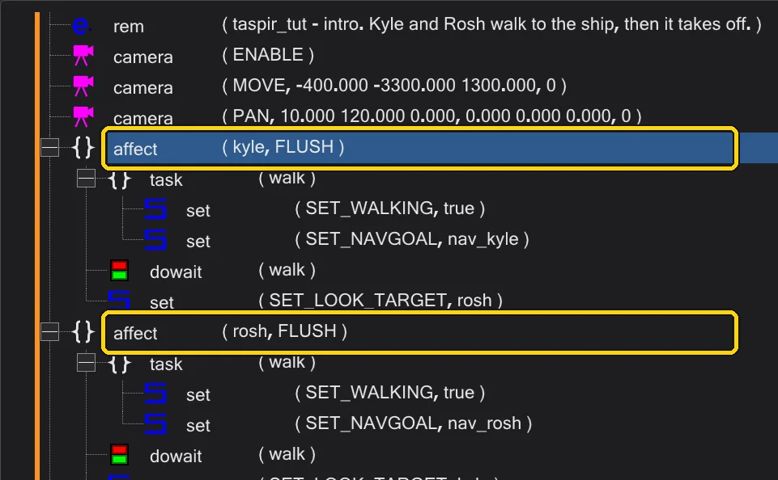
Zwei affect-Blöcke: sie laufen nebeneinander. - 2
Das Problem. In einem Block *startet*
set ( SET_NAVGOAL )den Lauf nur; der nächste Befehl folgt sofort - die Figur würde sich drehen oder sprechen, während sie noch läuft. Die Lösung: pack den Lauf in einentask. Fügetaskein, nenne ihnwalkund verschiebeSET_WALKINGundSET_NAVGOALhinein.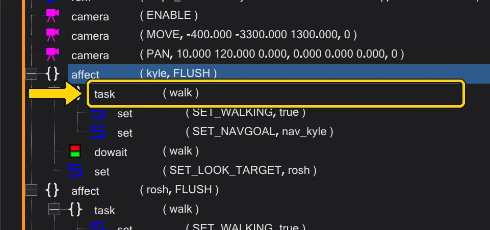
Der task walk mit dem Lauf darin. - 3
dowait. Füge hinter dem task
dowait ( "walk" )ein. Es startet den task und wartet, bis er fertig ist - bis die Figur angekommen ist. Alles danach geschieht, wenn die Figur steht.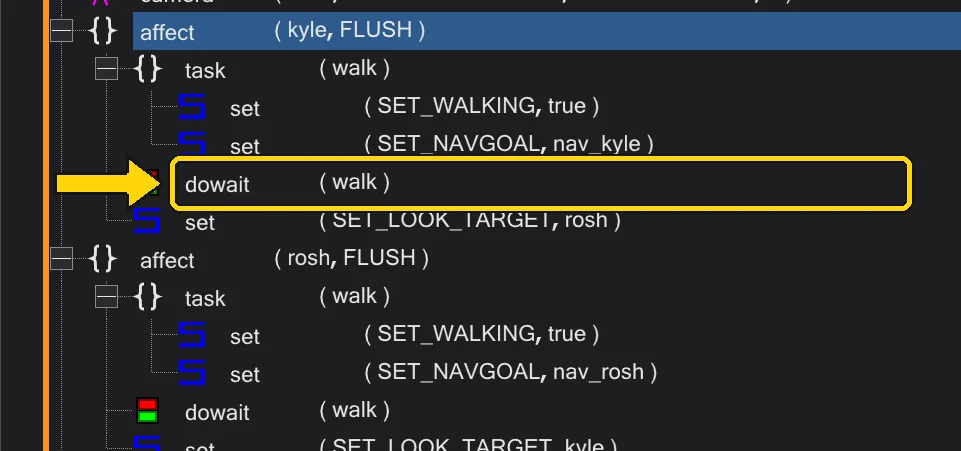
dowait wartet auf den Lauf. - 4
Zwei Dinge zugleich.
dostartet einen task und macht sofort weiter. Zwei tasks -walkundlook- werden mit zweidogestartet, undwait ( "walk" )wartet später auf den ersten.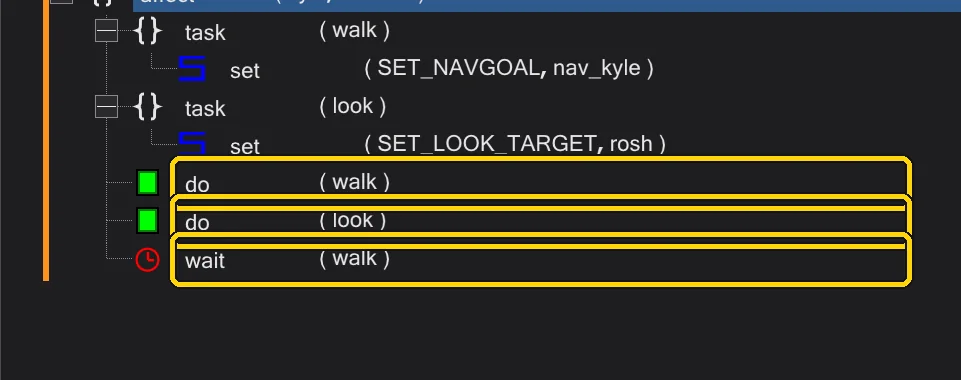
do, do und wait. - 5
Prüf es in der Zeitleiste. Wechsle zu Mission und klapp die Zeile der Figur in der Zeitleiste auf: was nach dem
dowaitfolgt, beginnt dort, wo der Lauf endet.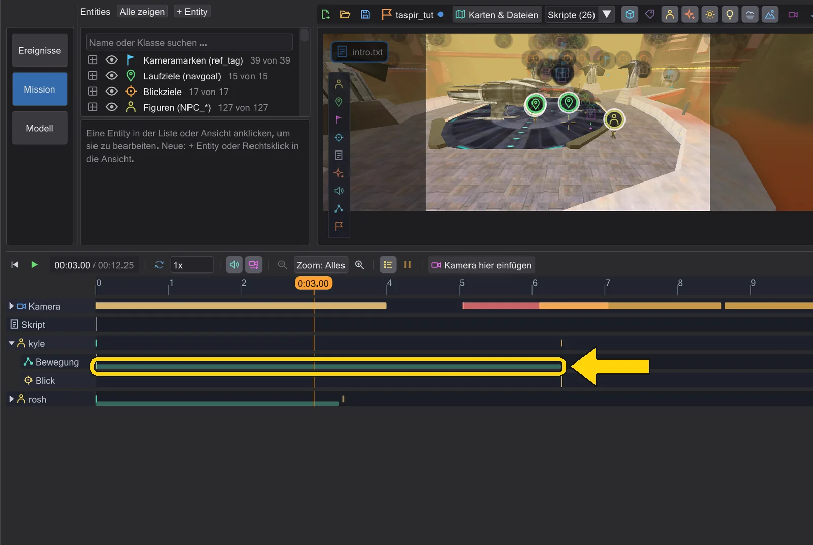
Kyles Lauf in der Zeitleiste.


- 1
Wo die Befehle sind. Klick in Graph auf einen Skriptknoten (anfangs ist das offene Skript gewählt). Rechts unter Befehle dieses Skripts steht jeder Befehl dieses Skripts - Blöcke eingerückt. Ein Klick auf eine Zeile wählt sie, ein Doppelklick bearbeitet sie, ein Rechtsklick öffnet das Menü.
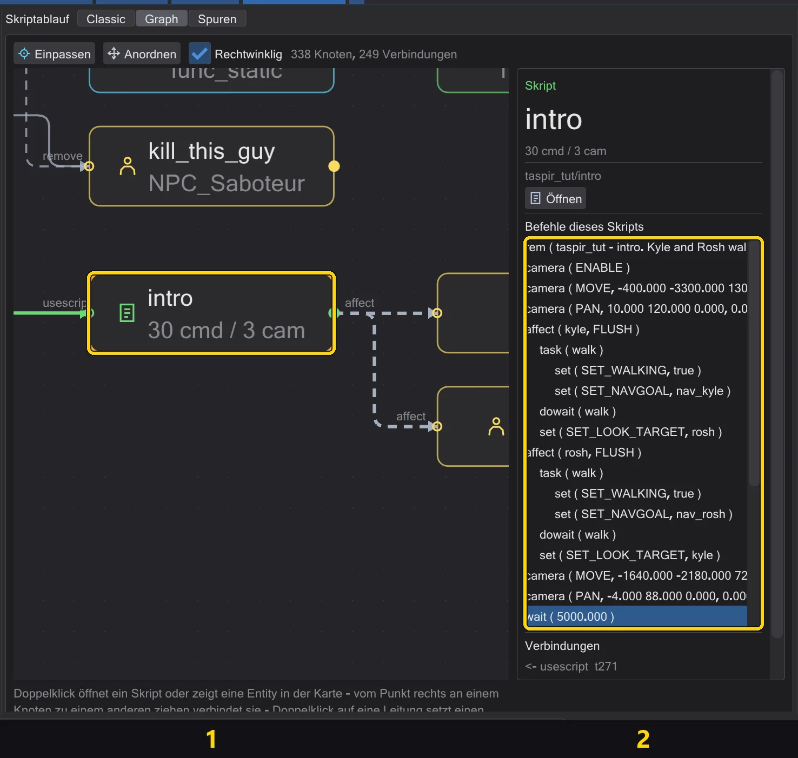
Der Knoten des offenen Skripts (1) und seine Befehle (2). - 2
Den Task bauen. Klick auf die Zeile
affect, doppelklick auftaskin der Liste Ereignisse und nenne ihn im Editorwalk. Dann klick auf die Zeiletaskund doppelklick zweimal aufset- fürSET_WALKINGundSET_NAVGOAL.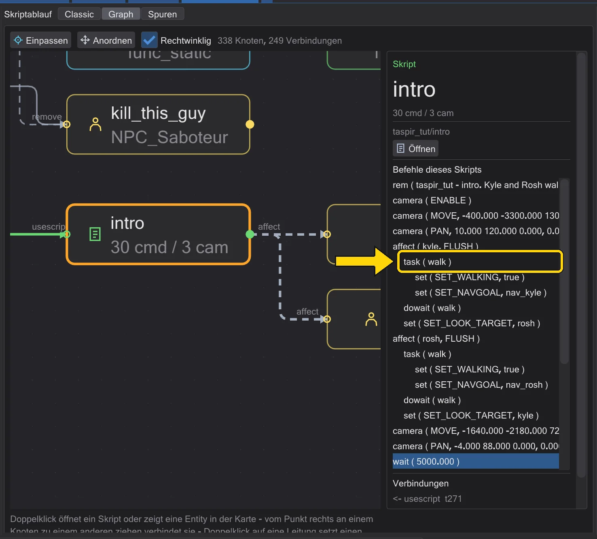
Der Task walk mit dem Weg darin, in der Liste. - 3
dowait danach. Zieh
dowaitaus der Liste Ereignisse auf die Zeiletask: Ein Befehl, der auf einer Zeile landet, kommt *hinter* sie - hinter den ganzen Block. Nenne den Task im Editorwalk.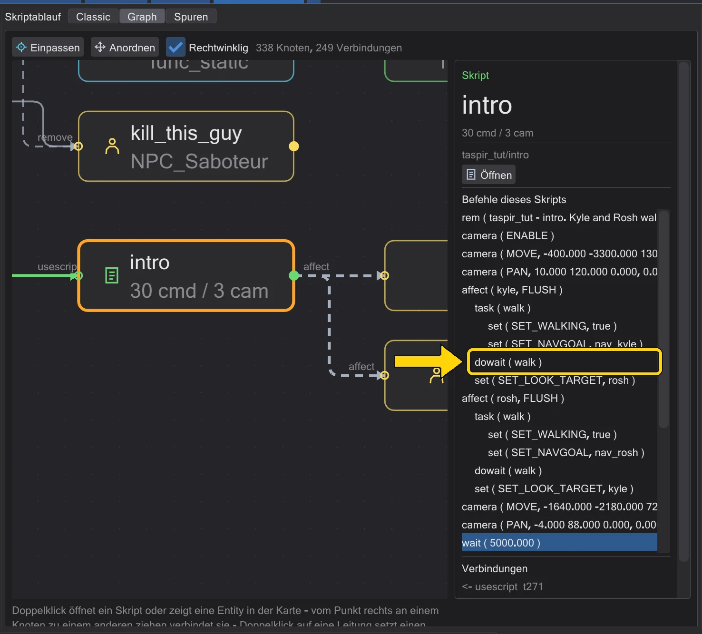
dowait walk hinter dem Task. - 4
In Spuren prüfen. Wechsle zu Spuren: Was dem
dowaitfolgt, beginnt dort, wo der Weg endet.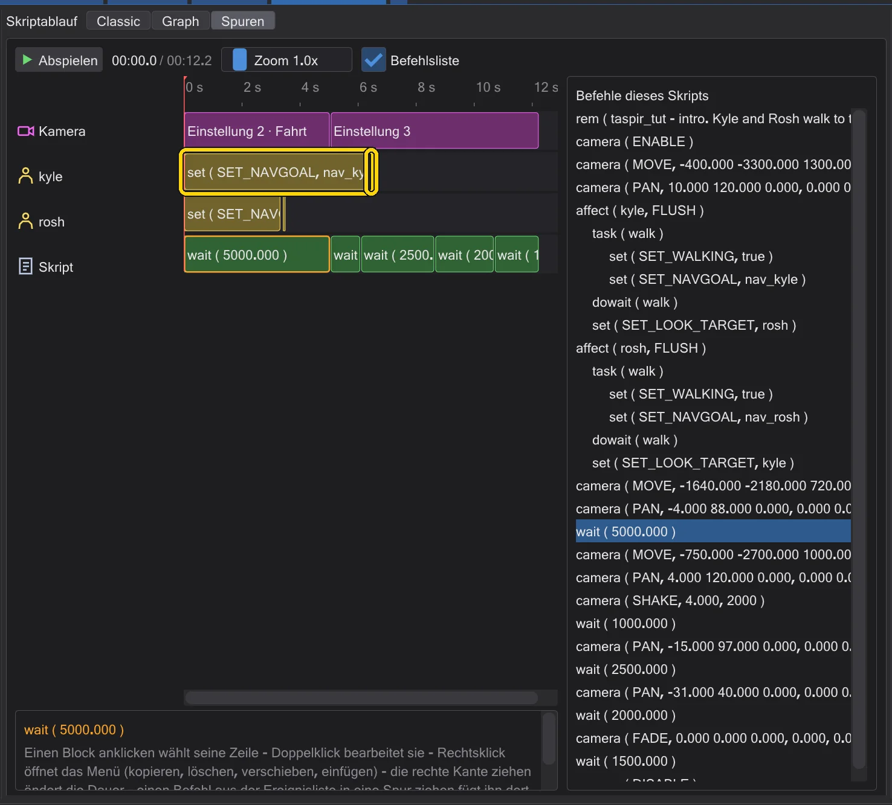
Kyles Zeile: Der Blick beginnt nach dem Weg.


- 1
Wo die Befehle sind. Spuren zeigt das Skript über die Zeit: die Kamera, eine Zeile je Figur, die Wartezeiten. Rechts listet Befehlsliste jeden Befehl - auch die, die keine Zeit brauchen, etwa
affect,taskoderdeclare.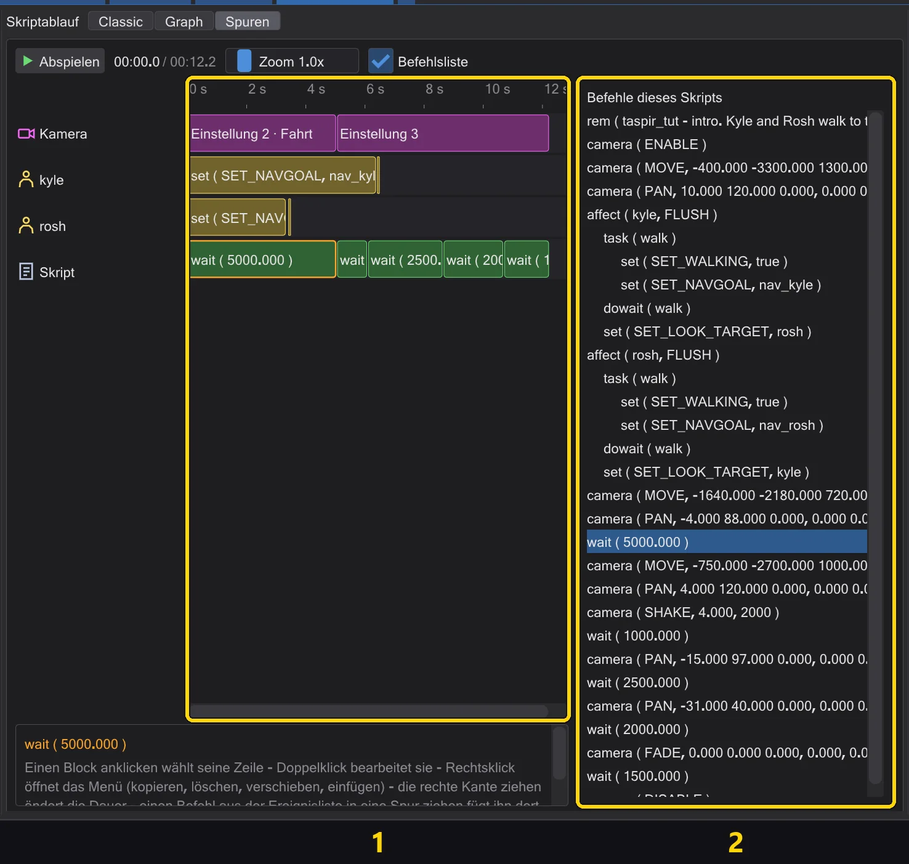
1: die Zeilen der Zeitleiste. 2: die Befehlsliste. - 2
Den Task in der Liste bauen. Ein
taskhat keine eigene Zeit - bau ihn in der Befehlsliste: Klick auf die Zeileaffect, doppelklick auftask, nenne ihnwalk; klick auf die Zeiletaskund doppelklick zweimal aufsetfürSET_WALKINGundSET_NAVGOAL.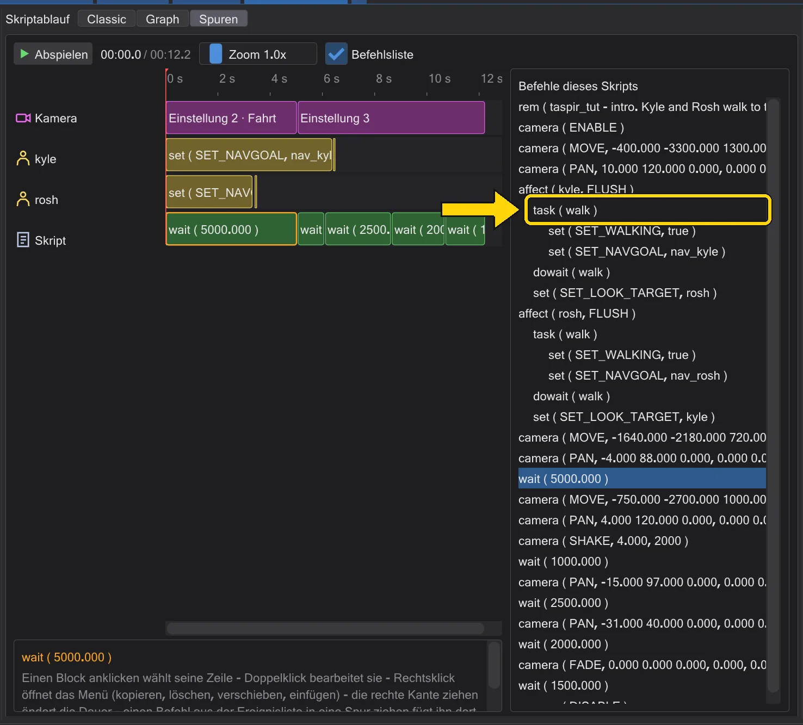
Der Task walk in der Befehlsliste. - 4
Zwei auf einmal. Mit
dostattdowaitbeginnt der nächste Befehl sofort - sein Block rückt an den Anfang des Wegs.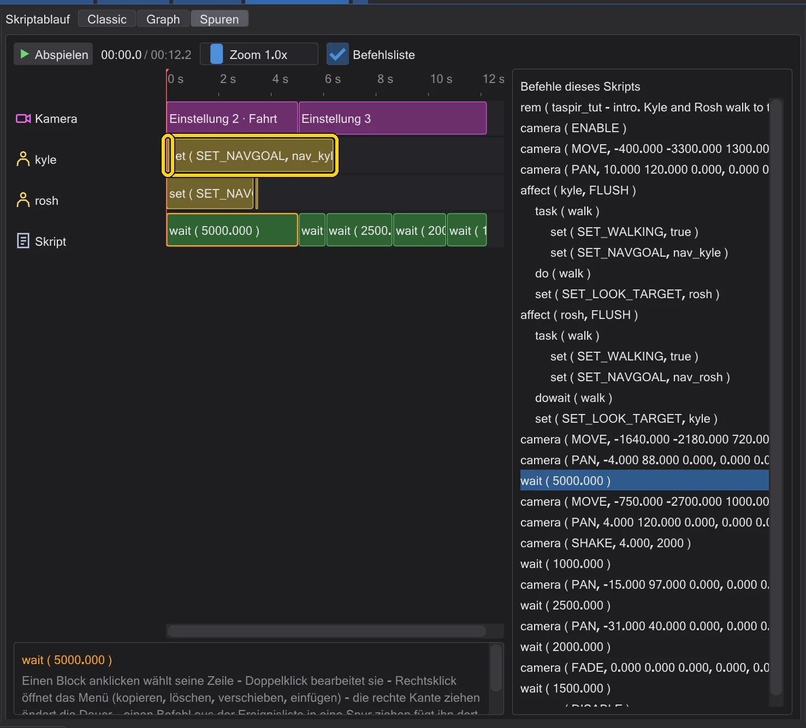
Mit do: Der Blick beginnt mit dem Weg.


Gut zu wissen#
- Befehle, die in ihrem Hilfetext mit
*markiert sind (wieSET_NAVGOAL), beenden ihren task erst, wenn die Aktion fertig ist - genau das lässtdowaitwarten.